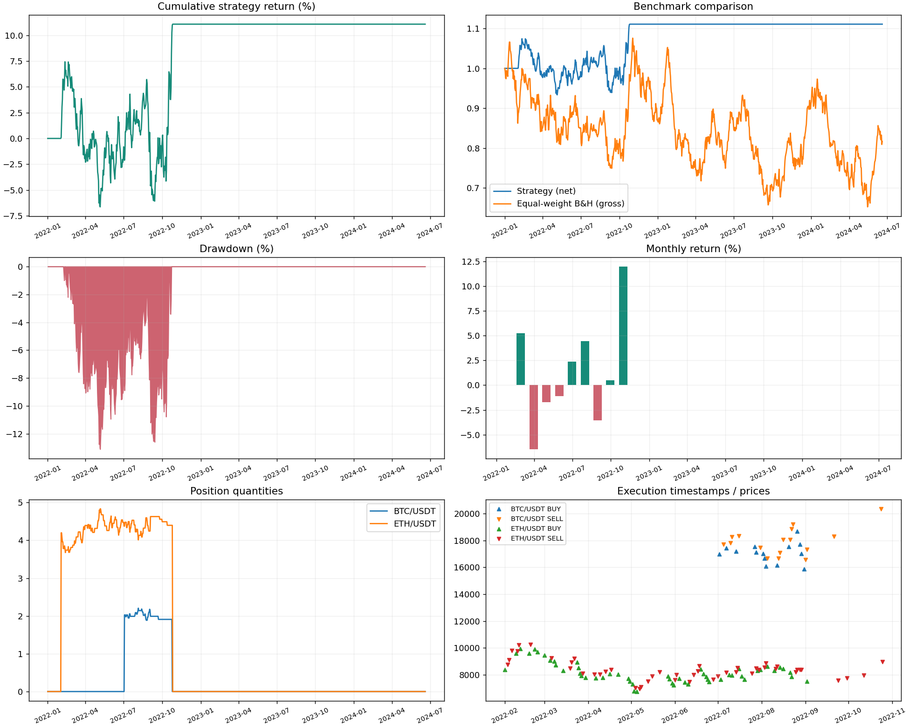

RESEARCH PLATFORM · PHASE 1–2 · OFFLINE
rsi
Source: SYNTHETIC deterministic fixture (seed=42), NOT actual crypto history. 2022-01-01 00:00:00+00:00 — 2024-06-19 00:00:00+00:00. Returns and weights in the table are fractions.

Performance
| Metric | Strategy | Gross benchmark |
|---|
| total_return | 0.11080 | -0.18311 |
| cagr | 0.04357 | -0.07880 |
| sharpe | 0.43909 | -0.05716 |
| sortino | 0.64441 | -0.08057 |
| max_drawdown | -0.13096 | -0.39333 |
| calmar | 0.33269 | -0.20035 |
| win_rate | 1.00000 | N/A |
| profit_factor | N/A | N/A |
| average_win | 5,540.08790 | N/A |
| average_loss | N/A | N/A |
| payoff_ratio | N/A | N/A |
| number_of_trades | 2 | 0 |
| average_holding_hours | 4,560.00000 | N/A |
| exposure | 0.29556 | N/A |
| volatility | 0.11117 | 0.35211 |
Interpretation & limits
- No expected return or future profitability is implied.
- Universe/delisting history is unverified; survivorship bias may be present.
- Bar-open fills, prior-bar volume cap; no order-book queue or intrabar limit fills.
- Open positions marked to final close; not force-liquidated. Trade stats include completed flat-to-flat episodes only.
- Benchmark: frictionless equal-weight buy & hold of input assets; excludes fees and slippage.
- ATR sizing is a risk budget, NOT a guaranteed per-trade loss limit; stop orders are not implemented.
- New BUY orders halted by risk engine: daily_loss
- Fewer than 30 closed trades: weak statistical evidence.
Metrics & config · Equity · Fills · Event journal